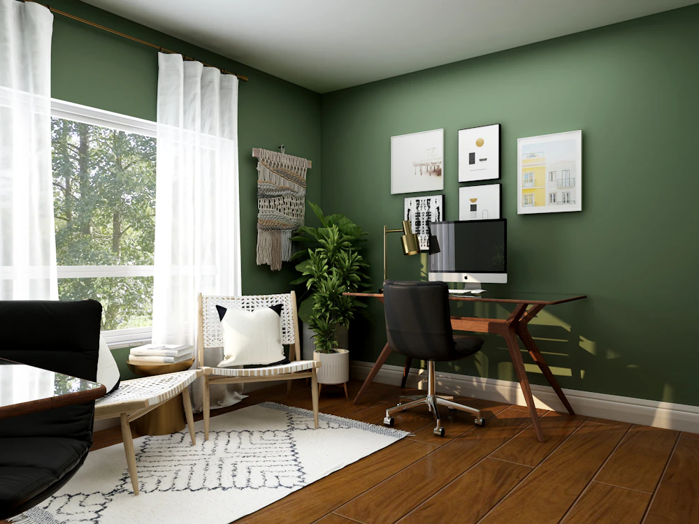

Propriétaire à Le Plessis-Trévise ? MADYS gère votre location courte durée de A à Z, de l'annonce à l'accueil des voyageurs, dans une ville sans compensation.
Le Plessis-Trévise est une ville résidentielle et boisée de l'est du Val-de-Marne. La gare Villiers-sur-Marne–Le Plessis-Trévise (RER E) la relie au centre de Paris.

Le centre-ville et les quartiers proches de la gare RER E.
Des familles, des groupes et des professionnels en mission dans l'est parisien.
Une maison ou un trois-pièces avec extérieur et parking.
Contrairement à Paris et à de nombreuses villes de petite couronne, Le Plessis-Trévise n'impose pas d'acheter de la commercialité pour louer en courte durée.
Vous pouvez la louer jusqu'à 120 nuits par an sans changement d'usage (sauf si la commune a abaissé ce plafond à 90).
Grand Paris Sud Est Avenir délivre aux particuliers une autorisation temporaire de changement d'usage (2 ans), sans compensation (délibération du 19 juin 2019).
Déclaration, autorisation, taxe de séjour : nous préparons les démarches avec vous. Règles vérifiées en novembre 2026, à reconfirmer en mairie avant la mise en location.
Une gestion complète de votre location courte durée, de l'annonce à la remise des clés.
Des annonces rédigées et optimisées pour Airbnb, Booking et Abritel, afin de maximiser votre visibilité.
Des photos de haute qualité qui mettent votre bien en valeur et incitent à réserver.
Messages, arrivées et départs : nous gérons toute la communication et l'accueil.
Un entretien irréprochable entre chaque séjour, avec un linge lavé et plié avec soin.
Petits travaux et interventions rapides pour que votre bien reste en parfait état.
Des tarifs ajustés selon la saison, les événements et la demande locale.
Oui. MADYS Conciergerie intervient à Le Plessis-Trévise ainsi que dans les communes voisines : Chennevières-sur-Marne, Sucy-en-Brie, Boissy-Saint-Léger, Créteil.
Si c'est votre résidence principale, vous pouvez la louer jusqu'à 120 nuits par an sans changement d'usage (sauf si la commune a abaissé ce plafond à 90). Sinon, une autorisation de changement d'usage est nécessaire. Grand Paris Sud Est Avenir délivre aux particuliers une autorisation temporaire de changement d'usage (2 ans), sans compensation (délibération du 19 juin 2019). Règles vérifiées en novembre 2026, à reconfirmer en mairie : nous vous accompagnons dans les démarches.
Cela dépend du type de logement, de son standing et de son emplacement. Notre simulateur en ligne donne une première fourchette en quelques secondes, et nous réalisons une estimation personnalisée gratuite lors du premier rendez-vous.
En trois étapes : un premier rendez-vous, physique ou en visioconférence, puis une visite du logement, et enfin le lancement des services après signature : shooting photo, création des annonces, accueil des voyageurs, ménage et blanchisserie. Voir le détail des étapes.
MADYS gère des biens dans toute l'Île-de-France. Voir aussi notre page Conciergerie Airbnb Val-de-Marne.
Estimation gratuite de vos revenus, sans engagement, réponse sous 24h.